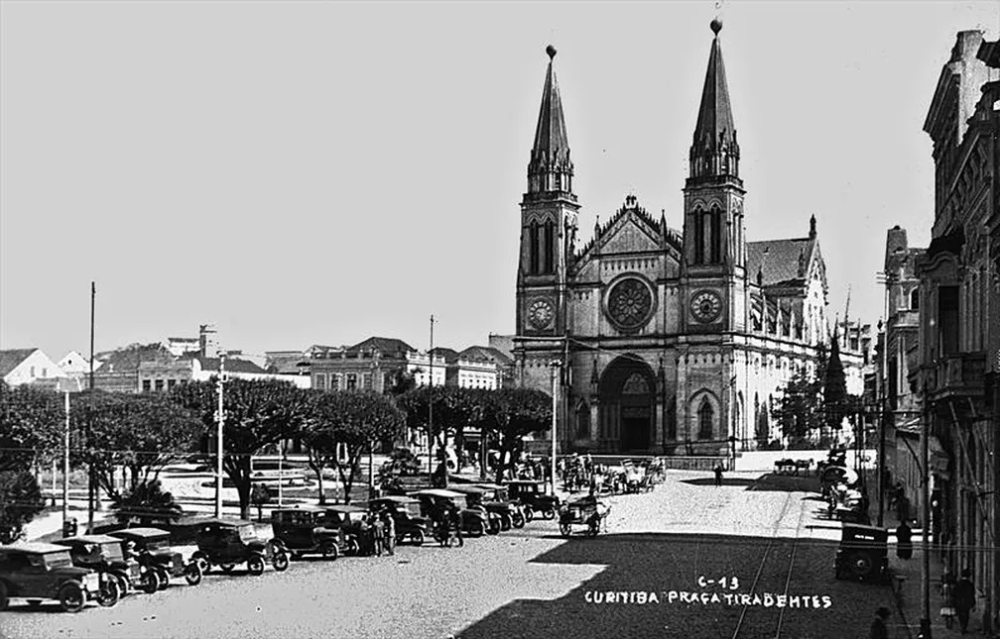

1693
Fundação de Curitiba
Em 29 de março de 1693 foi instalada a Câmara da Vila de Nossa Senhora da Luz dos Pinhais, data considerada como a fundação oficial de Curitiba.
Curitiba foi fundada oficialmente em 29 de março de 1693, quando foi instalada a Câmara da então Vila de Nossa Senhora da Luz dos Pinhais. Ao longo dos séculos, a cidade passou por grandes transformações econômicas, culturais e urbanas.
O tropeirismo, a imigração europeia, o crescimento econômico e o planejamento urbano contribuíram para formar a identidade da capital paranaense. Alemães, poloneses, italianos, ucranianos e outros povos deixaram marcas na arquitetura, gastronomia, cultura e nos costumes da cidade.
Conheça mais
Conheça alguns dos principais acontecimentos que ajudaram a transformar Curitiba ao longo de sua história.
Em 29 de março de 1693 foi instalada a Câmara da Vila de Nossa Senhora da Luz dos Pinhais, data considerada como a fundação oficial de Curitiba.
A passagem dos tropeiros pela região estimulou o comércio e ajudou no crescimento econômico e urbano da cidade.
Com a criação da Província do Paraná, Curitiba passou a exercer o papel de capital da nova província.
A chegada de alemães, poloneses, italianos, ucranianos e outros grupos transformou a cultura e o desenvolvimento da cidade.
Curitiba passou a desenvolver um planejamento urbano mais estruturado, com propostas para circulação, saneamento e organização da cidade.
Foi criado o Instituto de Pesquisa e Planejamento Urbano de Curitiba, responsável por acompanhar o desenvolvimento urbano da cidade.
O Plano Diretor passou a integrar transporte coletivo, sistema viário e uso do solo para orientar o crescimento de Curitiba.
Curitiba ampliou projetos de transporte, áreas verdes, cultura e planejamento urbano, características que ajudaram a tornar a cidade conhecida nacionalmente.
Veja e ouça conteúdos relacionados à história e à identidade da cidade.
Ouça uma breve apresentação sobre a história e as características da capital paranaense.
Utilize os botões abaixo para conhecer algumas curiosidades sobre a cidade.
Clique no botão para descobrir uma curiosidade sobre Curitiba.